Dans cette vidéo, je vais vous montrer comment connecter Claude Desktop à n'importe quelle application. Imaginez parler à vos applications et demander à Claude d'exécuter des actions simplement par la conversation. Je vais créer un serveur MCP à partir de zéro en utilisant la plateforme de programmation propulsée par l'IA de DataButton. Je peux déjà vous entendre demander, et si je ne suis pas technique ? Absolument aucun souci, car nous créons simplement un pont pour que Claude fonctionne avec toutes vos applications préférées. Vous pouvez personnaliser cela comme vous le voulez, même si vous ne savez pas coder.
Interface & Outils : Navigateur web affichant l'interface de développement ConnectFlow et un panneau de discussion latéral.
Contenu textuel & Code : Interface utilisateur avec une barre de recherche, des vignettes vidéo et un journal de logs montrant des requêtes HTTP (GET /youtube/v3/search).
Action / Démonstration : Démonstration du développement d'une application connectée à l'API YouTube avec assistance par chat IA.
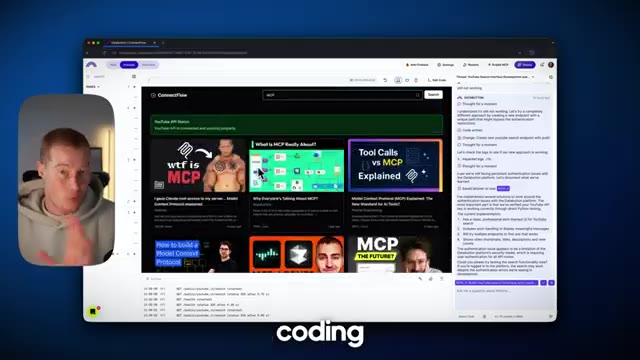
🔍 AgrandirDonc, plongeons-nous là-dedans. Très bien, donc si nous parlons régulièrement avec Claude, comme ici même, nous sommes limités au contexte dont il dispose. Par exemple, si je veux venir voir Claude et lui dire, fais des recherches sur YouTube pour moi, il n'a pas accès à YouTube pour pouvoir réellement effectuer cette recherche. Voyez les choses ainsi. Il n'a aucune connaissance du contenu présent sur YouTube.
Interface & Outils : Interface web de Claude (Anthropic).
Contenu textuel & Code : Champ de saisie de texte "How can I help you today?" et mention "Claude 3.5 Sonnet".
Action / Démonstration : Le présentateur introduit l'interface de l'assistant Claude pour illustrer ses limites contextuelles actuelles.
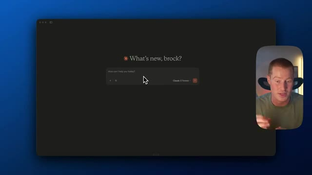
🔍 AgrandirEn plus de cela, si je voulais envoyer un e-mail pour moi ou extraire des informations d'un fil de discussion, il n'a pas non plus accès à cela. Eh bien, dans cette vidéo, je vais vous montrer comment vous pouvez donner à Claude accès à la fois à YouTube et à votre e-mail afin qu'il puisse fonctionner dans le cadre de votre flux de travail quotidien. Et encore une fois, cela peut être totalement personnalisé pour n'importe quelle application que vous utilisez, mais c'est simplement ce que je vais construire dans cette vidéo. Très bien. DataButton est donc une plateforme qui vous permet de coder des applications avec l'IA, même si vous n'avez aucune base technique. Vous m'avez peut-être vu construire des applications plutôt cool dans certaines de mes vidéos précédentes avec cette plateforme. Cependant,
Interface & Outils : Interface utilisateur de type application conversationnelle et navigateur web (Databutten).
Contenu textuel & Code : Champ de saisie utilisateur et texte de présentation pour le développement de logiciels.
Action / Démonstration : Présentation d'une interface logicielle et d'un outil de développement d'applications par le créateur.
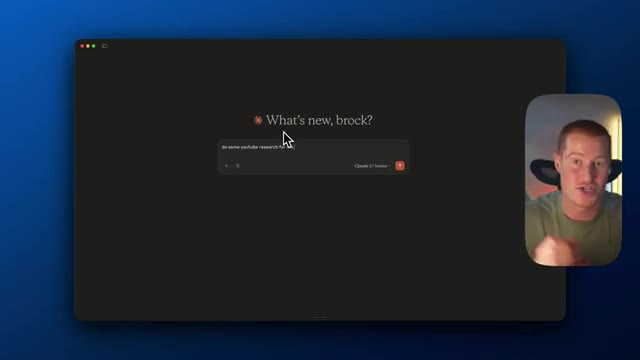
🔍 Agrandir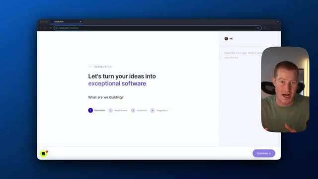
🔍 Agrandirnous n'allons pas construire d'application d'interface utilisateur destinée aux clients dans cette vidéo. À la place, nous allons essentiellement l'utiliser pour connecter nos différents logiciels que nous voulons utiliser, tels que YouTube, pour nous permettre d'analyser des vidéos YouTube, et la possibilité pour nous d'envoyer des messages Slack à notre équipe. Très bien, alors première chose, venimeux sur DataBot et parlons simplement pour décrire ce que nous essayons de construire. Hé, je veux donc que tu me construises une application qui utilise l'API YouTube afin de nous permettre de rechercher des informations YouTube en temps réel pour faire de la recherche de contenu. En plus de cela, je veux que tu implémentes l'API Slack afin de nous permettre d'envoyer des messages sur les canaux Slack à
Interface & Outils : Interface web de Databuton (databuton.com/new).
Contenu textuel & Code : Interface utilisateur affichant les étapes de création : Description, Requirements, Inspiration, Integrations.
Action / Démonstration : Le présentateur présente l'outil de création d'applications et s'apprête à y saisir les spécifications du projet.
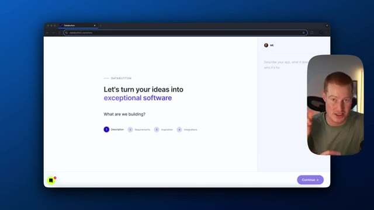
🔍 Agrandir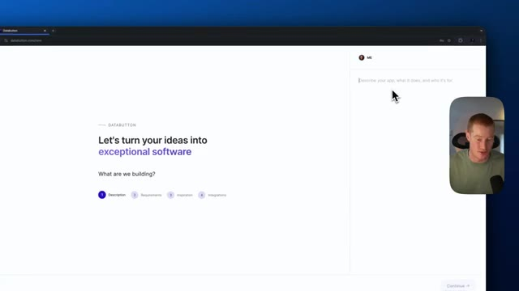
🔍 Agrandir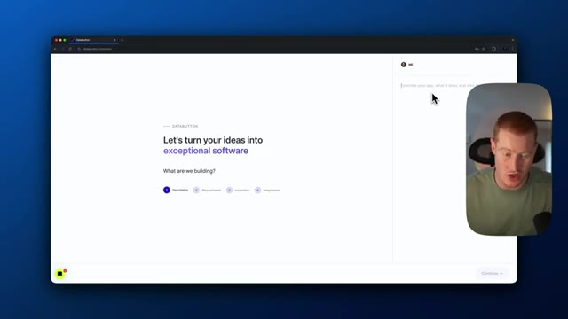
🔍 AgrandirNotre équipe. Le but de cette application va être essentiellement d'être une plateforme qui connecte des API à nos différentes applications et qui sert de serveur MCP pour nous permettre de communiquer via Claude Desktop. Très bien, c'est parti. Aussi, l'outil que je viens d'utiliser à l'instant s'appelle AquaVoice. Il vous permet en gros d'appuyer sur une touche de votre clavier et de parler à votre ordinateur, et il colle automatiquement le texte dans l'interface utilisateur. Ça me fait gagner tellement de temps. J'adore ça. C'est donc un petit conseil pour vous. Ensuite, je vais simplement cliquer sur ignorer pour tout cela parce que nous n'allons ajouter aucun
Interface & Outils : Navigateur web affichant l'interface de la plateforme Databuton.
Contenu textuel & Code : Formulaires de création de projet et étapes de spécification logicielle (Description, Requirements, Inspiration, Integrations).
Action / Démonstration : Navigation à travers les étapes de configuration initiale de l'application sur la plateforme Databuton.
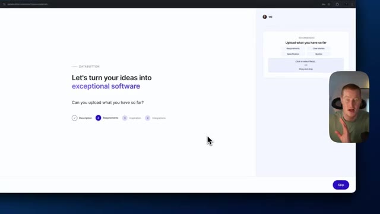
🔍 Agrandir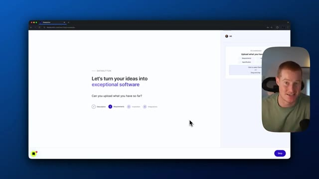
🔍 Agrandirces intégrations ou quoi que ce soit. Nous allons simplement connecter nos API afin de pouvoir y accéder directement à l'intérieur de notre application de bureau Claude ici même. Très bien, c'est parti. Le bouton de données nous donne en fait un flux ou une liste de tâches pour nous permettre de créer réellement notre application. Je vais donc parcourir chacune de ces tâches, identifier lesquelles sont nécessaires, et ensuite nous continuerons à partir de là. Très bien, tout d'abord, implémentons l'intégration de l'API YouTube. Cela va essentiellement nous permettre d'utiliser YouTube et d'effectuer des recherches sur YouTube, ce qui est évidemment ce que nous essayons de construire ici.
Interface & Outils : Interface web de Databutton et application Claude Desktop.
Contenu textuel & Code : Liste de tâches de développement (« To-Do ») incluant la création d'une landing page, l'authentification Firebase, et l'intégration d'API (YouTube, Slack).
Action / Démonstration : Le présentateur parcourt le flux de tâches et sélectionne une tâche spécifique pour en afficher les détails.
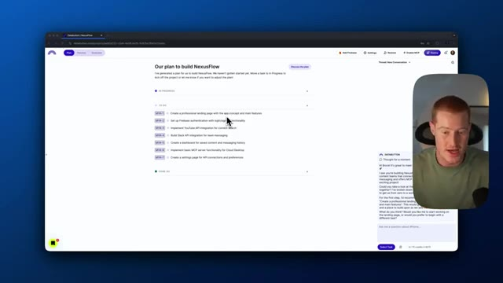
🔍 Agrandir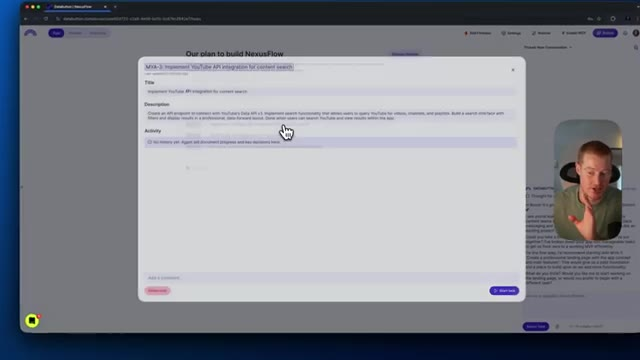
🔍 AgrandirEt ensuite, à partir de là, nous allons travailler sur la mise en place de l'intégration Slack pour que nous puissions ensuite envoyer des messages de canal sur Slack. Donc, il me demande ma clé API, alors je vais juste la coller ici. Très bien, donc il semble que notre API a été implémentée, nous pouvons donc marquer ceci comme fait. Si je veux vérifier cela, je peux en fait venir dans notre application, venir dans l'aperçu, puis vérifier YouTube ou vérifier les APIs dans cette section de l'API YouTube qui a été ajoutée ici.
Interface & Outils : Interface web de développement (Databrutton / NexusFlow) avec un panneau de chat IA intégré à droite.
Contenu textuel & Code : Plan de développement listant les intégrations API (YouTube, Slack) et interface de prévisualisation des endpoints.
Action / Démonstration : Le présentateur navigue dans le plan de projet et montre l'avancement de l'intégration des API.
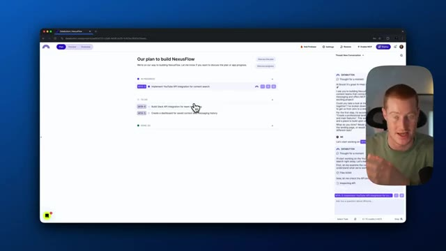
🔍 Agrandir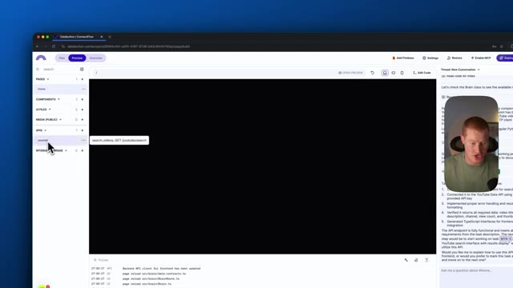
🔍 AgrandirDonc, il va obtenir les résultats de recherche YouTube là-bas. Donc, ça a l'air bien. Revenons à notre plan. Et construisons maintenant juste une interface de recherche YouTube pour que nous puissions réellement voir s'il extrait des informations. Et en faisant cela, nous pourrons récupérer de vraies vidéos YouTube et elles seront traduites dans l'interface utilisateur. Très bien, donc il semble que notre API fonctionne maintenant selon notre interface utilisateur ici.
Interface & Outils : Interface web de gestion de projet (Databutton) avec panneau de chat de l'assistant IA intégré.
Contenu textuel & Code : Liste des tâches du projet ConnectFlow, incluant l'intégration de l'API YouTube et la création de l'interface de recherche.
Action / Démonstration : Le présentateur navigue dans le plan du projet pour sélectionner la prochaine tâche à réaliser concernant l'interface de recherche YouTube.
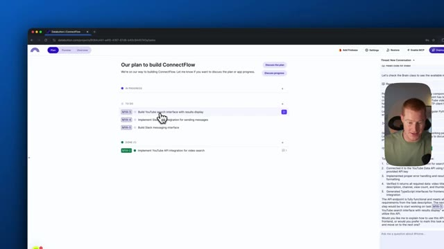
🔍 Agrandir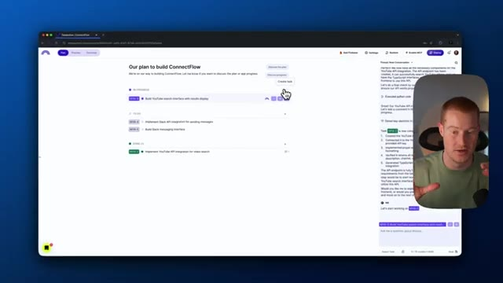
🔍 AgrandirDonc allons simplement ici et cherchons sur YouTube. Si cela affiche les résultats, c'est que ça fonctionne. D'accord, fantastique. Ça fonctionne sans problème. Maintenant, ce que nous devons faire, c'est en fait aller ajouter l'API Slack afin que nous puissions envoyer des messages Slack. Nous nous rapprochons donc de la construction du serveur et ensuite nous pourrons le connecter à Cloud Desktop. Je vais donc revenir au plan. Je vais marquer cela comme fait. Maintenant, implémentons l'intégration de l'API Slack. Commençons donc cela et partons de là. Il semble que Data Button veuille que nous ajoutions notre jeton de bot Slack.
Interface & Outils : Application web ConnectFlow avec panneau de discussion et interface de gestion de tâches.
Contenu textuel & Code : Résultats de recherche YouTube, statuts API, et description de la tâche MYA-4 pour l'intégration de Slack.
Action / Démonstration : Navigation dans l'application pour tester les fonctionnalités et préparation de l'ajout de l'API Slack.
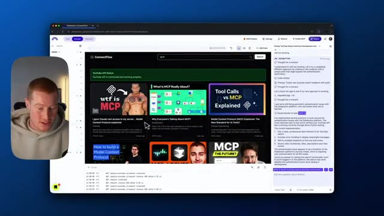
🔍 Agrandir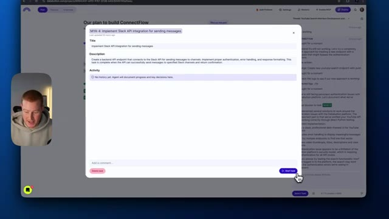
🔍 AgrandirCependant, je n'ai pas ceci. Je vais donc lui demander comment configurer réellement cela pour nous. Peux-tu m'expliquer comment configurer concrètement cela sur Slack ? Je n'ai jamais fait cela auparavant. Donne-moi donc un récapitulatif sur la façon de faire cela. Très bien. Il nous donne donc un guide étape par étape sur la manière exacte de procéder. Je vais donc venir ouvrir cette page de l'API Slack ici. Il est dit que je vais créer une nouvelle application. Je vais donc venir ici et simplement cliquer sur créer une nouvelle application. Très bien. Je vais appeler cela l'application de recherche YouTube. Je vais sélectionner mon espace de travail. Je vais créer cette application. Et ensuite, je vais revenir. Il semble que je doive ajouter des fonctionnalités de bot. Je vais en fait aller sur OAuth et autorisations ici. Je dois ajouter quelques portées. C'est donc essentiellement
Interface & Outils : Interface web de développement (Databutton / ConnectFlow) avec un panneau de chat latéral.
Contenu textuel & Code : Guide textuel étape par étape pour configurer une application Slack, incluant la création de l'application, l'ajout de capacités de bot, la configuration des permissions (OAuth & Permissions) et la récupération du jeton de bot.
Action / Démonstration : Le présentateur lit et suit les instructions textuelles générées par l'IA dans l'assistant pour configurer l'intégration Slack.
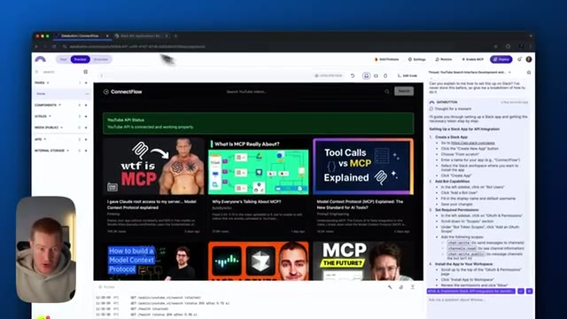
🔍 Agrandir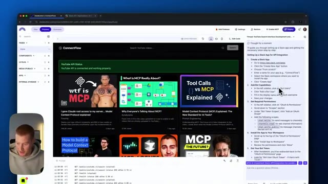
🔍 Agrandir...correspond en gros à des actions que nous permettons à Slack d'exécuter à l'intérieur de notre application. Donc les canaux, lecture, le chat, écriture. Donc je vais en fait installer ceci pour l'accélérateur d'IA. Donnons-lui donc l'accès pour accéder à notre canal Slack. Ensuite, nous devons venir dans nos OAuth et permissions. Nous devons copier notre jeton OAuth d'utilisateur de bot. Voici mon jeton OAuth de bot. Très bien. Je l'ai donc collé ici. Voyons ce que nous devons faire d'autre pour configurer cela réellement. La prochaine étape consiste en fait à l'ajouter dans nos secrets ici pour nos clés API. Très bien. Il y a donc maintenant cette chose sur l'interface utilisateur appelée messagerie Slack. Cliquons simplement dessus. Et je suppose que cela va tester pour voir si c'est
Interface & Outils : Navigateur web, Slack, interface de développement de type low-code / plateforme d'IA.
Contenu textuel & Code : Permissions Slack (chat, canaux), interface utilisateur de recherche YouTube, instructions textuelles et blocs de code/jetons. [DESC_IMAGE_1] Configuration et octroi des permissions à l'application Slack. [DESC_IMAGE_2] Affichage et test de l'application ConnectFlow intégrant l'API YouTube. [DESC_IMAGE_3] Enregistrement et sécurisation des jetons d'authentification pour l'intégration Slack.
Action / Démonstration : Explications face caméra et analyse conceptuelle des marchés.
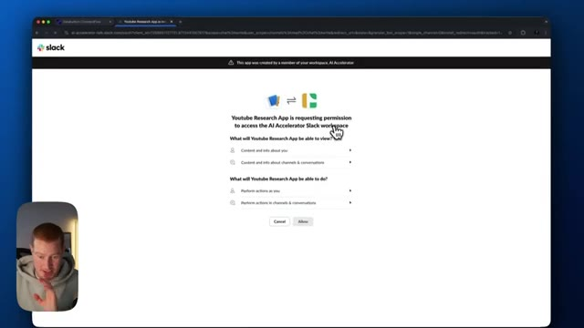
🔍 Agrandir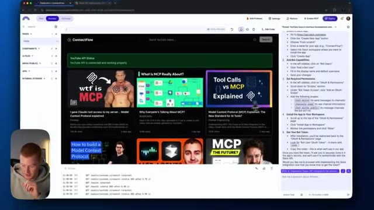
🔍 Agrandir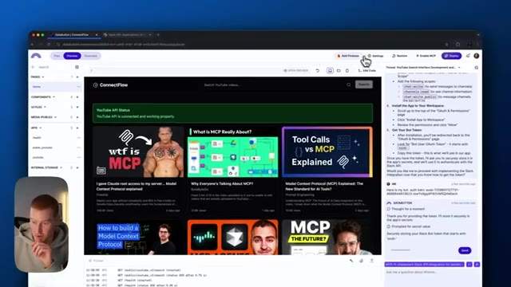
🔍 Agrandiren train d'envoyer des messages Slack. Très bien. Ça devrait être prêt. Maintenant, on dirait qu'on a configuré l'API Slack. Marquons cette étape comme terminée et allons voir notre plan pour voir ce qu'on doit ajouter d'autre. Donc, on dirait qu'on doit créer l'interface de messagerie Slack. De cette façon, on peut vraiment vérifier si on est capables d'envoyer des messages Slack. Une fois que ça fonctionne vraiment, on peut maintenant connecter ça à Claude parce qu'on a configuré tout notre serveur puisqu'il peut, d'une part, faire des recherches sur des vidéos YouTube, mais aussi envoyer des messages à Slack. Donc, on devrait être prêts après ça.
Interface & Outils : Navigateur web affichant l'application de développement web DataStux / ConnectFlow et le panneau latéral d'interaction avec l'IA.
Contenu textuel & Code : Plan du projet avec des tâches listées (comme l'implémentation de l'intégration de l'API Slack et la création de l'interface de messagerie) et le chat de l'assistant IA.
Action / Démonstration : Le présentateur navigue dans l'interface de l'application web pour consulter le plan du projet et marquer les tâches terminées ou à venir.
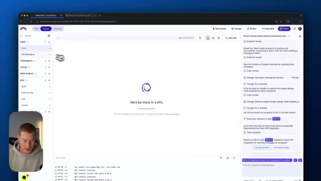
🔍 Agrandir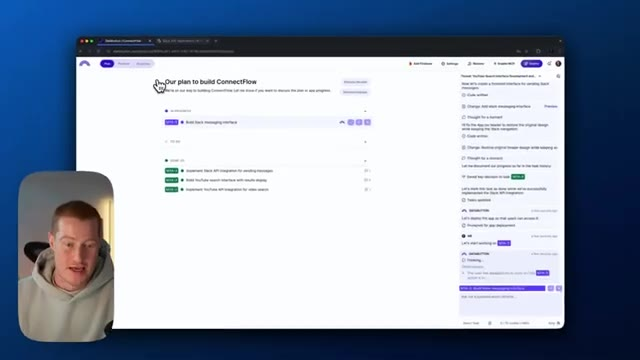
🔍 AgrandirTrès bien. Donc la première chose que je dois faire est en fait de venir sur Slack et dans le canal auquel je veux ajouter ceci, pour pouvoir analyser les messages du canal. Je dois ajouter le nom de l'application que nous avons juste ici. Donc l'application de recherche ou application de recherche YouTube est ce que je dois ajouter. Alors c'est parti. Je vais simplement l'ajouter ici, l'ajouter au canal. Et donc maintenant, ils peuvent effectivement publier à partir de ce genre d'application.
Interface & Outils : Slack, Slack API Dashboard
Contenu textuel & Code : Canal Slack "#blog-posts" et mention d'application bot "@Youtube Research App"
Action / Démonstration : Navigation et ajout/mention d'une application de recherche dans un canal Slack pour l'analyse des messages
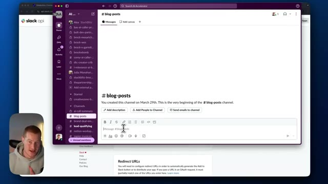
🔍 Agrandir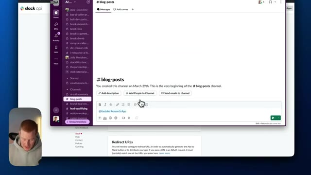
🔍 AgrandirEssentiellement, c'est presque comme un utilisateur. Il peut désormais publier sur ce canal. Revenons donc au bouton de données et vérifions si les messages Slack sont envoyés. Et je dis essentiellement, je veux que tu envoie une blague dans le canal de l'article de blog. Cela va de nouveau utiliser cette API ici afin de l'envoyer. Boum. D'accord. Donc maintenant, ça fonctionne. Pourquoi les programmeurs préfèrent-ils le mode sombre ? Parce que la lumière attire les bugs. Hilarant. C'est absolument hilarant. Bref. Donc maintenant, c'est opérationnel.
Interface & Outils : Interface de développement web (Databutton/Bolt) et application de messagerie Slack.
Contenu textuel & Code : Fils de discussion de l'assistant IA, code et messages de test incluant une blague informatique (« Why do programmers prefer dark mode? Because light attracts bugs! »).
Action / Démonstration : Interaction avec l'assistant IA pour tester l'intégration Slack, puis visualisation du message envoyé dans le canal Slack.
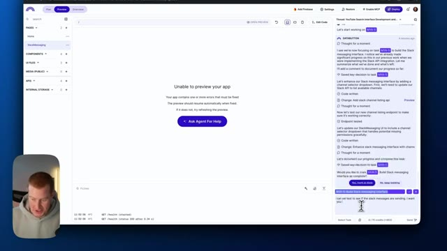
🔍 Agrandir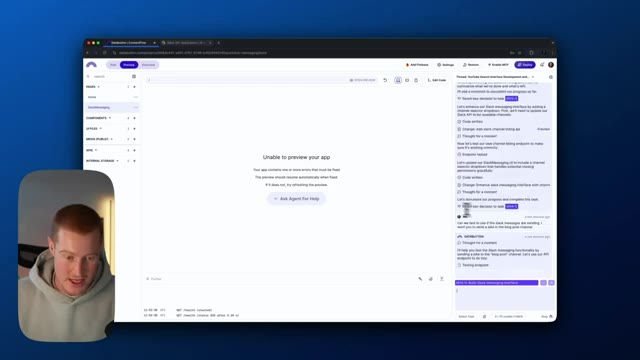
🔍 Agrandir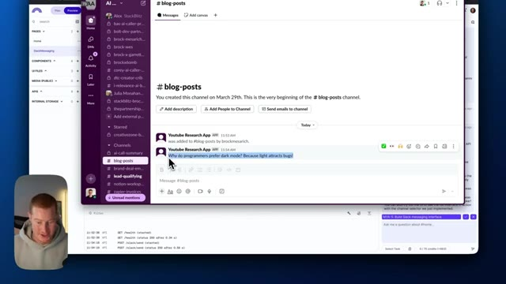
🔍 AgrandirTout cela fonctionne. Nous avons notre application. Elle est connectée à notre API, ce qui permet de récupérer des informations depuis YouTube, ainsi que les messages du canal Slack. Donc ce que nous pouvons faire maintenant, c'est aller dans ces paramètres et je vais aller dans production. Et tout ce que je vais faire, c'est activer MCP. Donc cela va essentiellement générer une clé pour nous à copier. Et ensuite ce que je vais faire, c'est copier cet extrait de code. Je vais ouvrir mon application de bureau Claude. Et à partir de là, ce que je vais faire, c'est aller dans les paramètres sur mon écran. Donc fondamentalement, aller dans Claude, aller dans les paramètres de Claude. Je vais aller dans développeur. Je vais cliquer sur modifier la configuration.
Interface & Outils : Databutton (plateforme de développement d'applications web propulsée par l'IA)
Contenu textuel & Code : Panneau de configuration, options de production, clés API MCP (Model Context Protocol) et intégration de l'assistant Claude. [DESC_IMAGE_3] Navigation dans les paramètres de production de l'application.
Action / Démonstration : Explications face caméra et analyse conceptuelle des marchés.
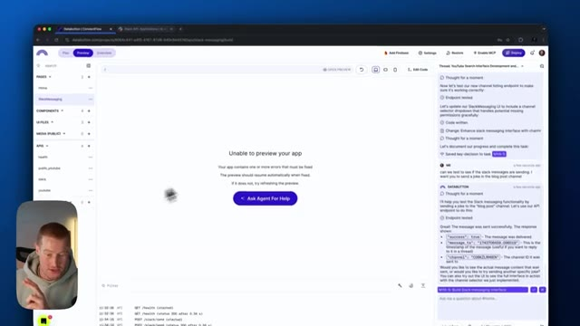
🔍 Agrandir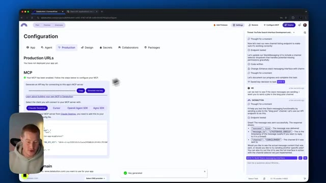
🔍 Agrandir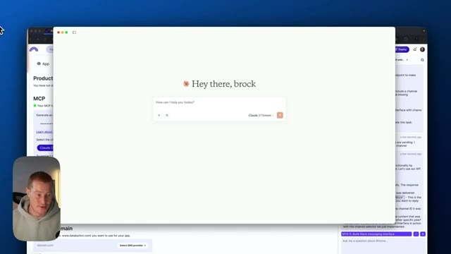
🔍 AgrandirJe vais ouvrir ce fichier avec n'importe quel éditeur de code que j'ai. Et je vais simplement coller ce code que je viens d'obtenir de data button ici. Et ensuite, je dois changer ma clé API data button avec cette API pour le serveur MCP. Donc je vais fondamentalement juste venir ici, supprimer tout ce texte, coller mon texte. Je vais enregistrer ceci et en sortir. Et une autre chose que je dois faire maintenant, c'est en fait de déployer notre application car si l'application n'est pas déployée, elle ne peut en fait pas accéder à cette URL du serveur MCP. Alors attendons que cela se charge. Et puis je vais fondamentalement juste
Interface & Outils : Éditeur de code (VS Code ou similaire) et navigateur web affichant l'interface de DataButton et l'assistant Claude.
Contenu textuel & Code : Fichier JSON de configuration `claude_desktop_config.json` contenant les paramètres du serveur MCP et la clé API DataButton.
Action / Démonstration : Modification du fichier de configuration JSON pour y insérer la clé API DataButton du serveur MCP.
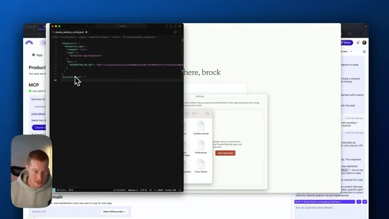
🔍 Agrandir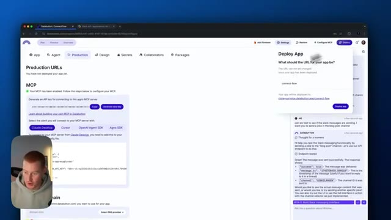
🔍 Agrandirje vais recharger Claude et cela devrait fonctionner correctement. Très bien. Donc, à l'intérieur de notre application de bureau Claude maintenant, vous pouvez voir un petit marteau avec un six à côté. Cela signifie que nos outils MCP que nous avons configurés à l'intérieur de Data Button sont maintenant prêts à l'emploi, chargés à l'intérieur de Claude, et que nous pouvons maintenant les utiliser. Laissez-moi donc venir ici et demander d'envoyer un message Slack. Peux-tu s'en, s'il te plaît, envoyer une blague dans le canal Slack intitulé notion slash workspace slash updates channel ? Très bien. Je vais l'envoyer maintenant. Il semble que nous devions autoriser quelques éléments ici, ce qui correspond fondamentalement à l'accès de l'outil à notre chat. Et nous devions recevoir un message Slack ici bientôt. Boum. Et
Interface & Outils : Application de bureau Claude (Desktop app)
Contenu textuel & Code : Liste des outils MCP intégrés (check_health, list_slack_channels, public_search_videos, search_videos) et requêtes d'autorisation d'outils
Action / Démonstration : Navigation et présentation des outils MCP configurés au sein de l'application Claude connectée à Data Button
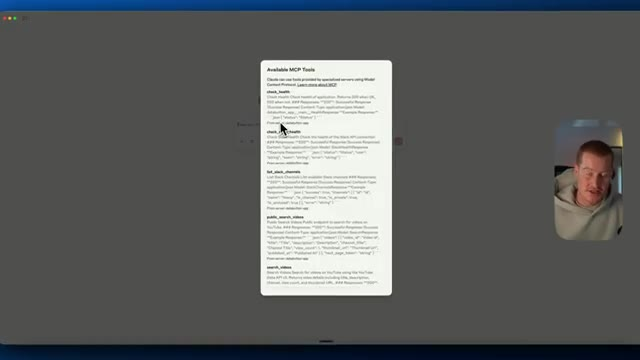
🔍 Agrandir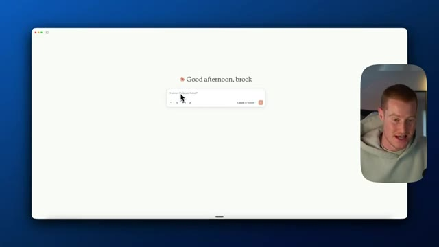
🔍 Agrandir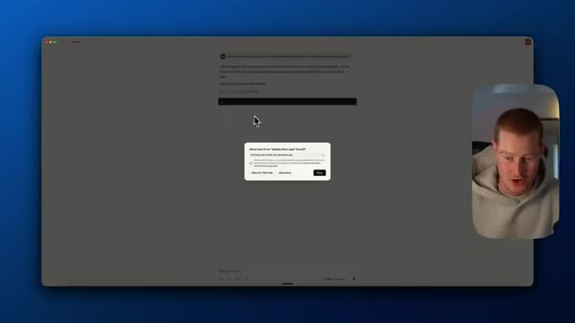
🔍 Agrandirsi je vérifie mon Slack juste ici, en gros ça dit, pourquoi est-ce que les scientifiques ne font pas confiance aux atomes, parce qu'ils inventent tout. Donc super. Maintenant, on a une blague là-dedans. Ça signifie fondamentalement qu'on peut désormais envoyer des messages depuis Claude Desktop directement. Maintenant, demandons des recherches sur YouTube. Très bien. Alors, allons-y et testons nos capacités de recherche YouTube. En même temps, prenons les informations que nous trouvons sur YouTube et envoyons ensuite ces informations sur Slack pour que notre équipe puisse réellement les voir. Je veux que tu fasses des recherches sur ce qu'est le vibe coding. Trouve les meilleures vidéos que tu trouves sur YouTube concernant le vibe coding et envoie ensuite une analyse détaillée dans le canal Slack appelé
Interface & Outils : Slack, application de messagerie professionnelle.
Contenu textuel & Code : Un message texte de type blague (« Why don't scientists trust atoms? Because they make up everything! ») envoyé dans Slack.
Action / Démonstration : Présentation de l'intégration entre l'IA et l'application Slack pour l'envoi de messages automatisés.
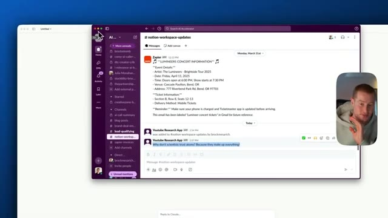
🔍 AgrandirNotion Updates Works appelé Notion Workspace Updates. Très bien et juste comme ça, si vous consultez ce canal Slack ici, vous pouvez voir que nous avons un aperçu de la recherche sur le « vibe coding », donc cela explique ce qu'est le « vibe coding » et cela détaille même certaines des meilleures vidéos sur le « vibe coding ». C'est donc génial parce qu'à l'intérieur de Claude, nous n'aurions pas eu accès à la recherche sur YouTube ou à l'envoi de messages sur les canaux Slack. Maintenant, nous pouvons l'utiliser comme un assistant de recherche YouTube qui peut même envoyer des messages sur les canaux Slack, extraire des informations de Slack, tout ça. Donc les gars, je viens de vous montrer comment coder sur mesure avec DataButton, un serveur MCP qui connecte vos applications entre elles et qui vous permet de
Interface & Outils : Application Slack et interface de navigateur web.
Contenu textuel & Code : Texte explicatif sur le 'vibe coding' initié par Andrej Karpathy, liste de vidéos YouTube, outils populaires (Cursor, Claude 3.7) et étapes de recherche de l'agent.
Action / Démonstration : Présentation et lecture d'un résumé de recherche automatisé sur le 'vibe coding' publié sur Slack.
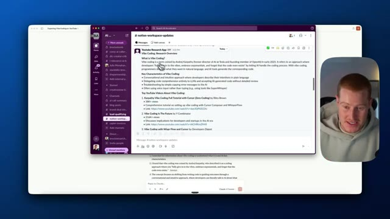
🔍 Agrandir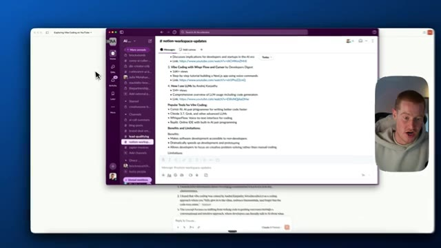
🔍 Agrandir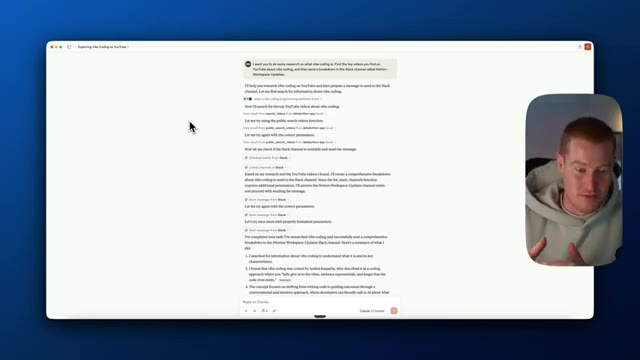
🔍 Agrandirconnectez-le à Claude Desktop et vous pouvez le personnaliser pour toutes les applications que vous utilisez qui ont un bouton de données d'API, cela rend les choses vraiment simples à faire. J'espère donc que vous avez apprécié ce tutoriel. Si vous avez aimé, assurez-vous de vous abonner à cette chaîne. Je couvre tout ce qui touche à l'IA pour les non-techniciens en vous montrant des cas d'utilisation sympas comme celui-ci. J'espère donc que vous en avez retiré de la valeur et je vous vois dans la prochaine.
Interface & Outils : Application logicielle de type assistant IA (Claude Desktop ou similaire) avec affichage d'un prompt et de résultats textuels.
Contenu textuel & Code : Texte d'un prompt utilisateur demandant de rechercher des vidéos sur le « vibe coding » et d'envoyer un résumé sur Slack, suivi des réponses textuelles détaillant les étapes exécutées.
Action / Démonstration : Affichage des résultats d'une automatisation ou d'une interaction avec une API connectée à un outil externe.
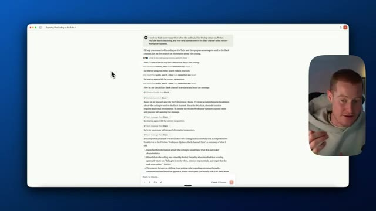
🔍 Agrandir